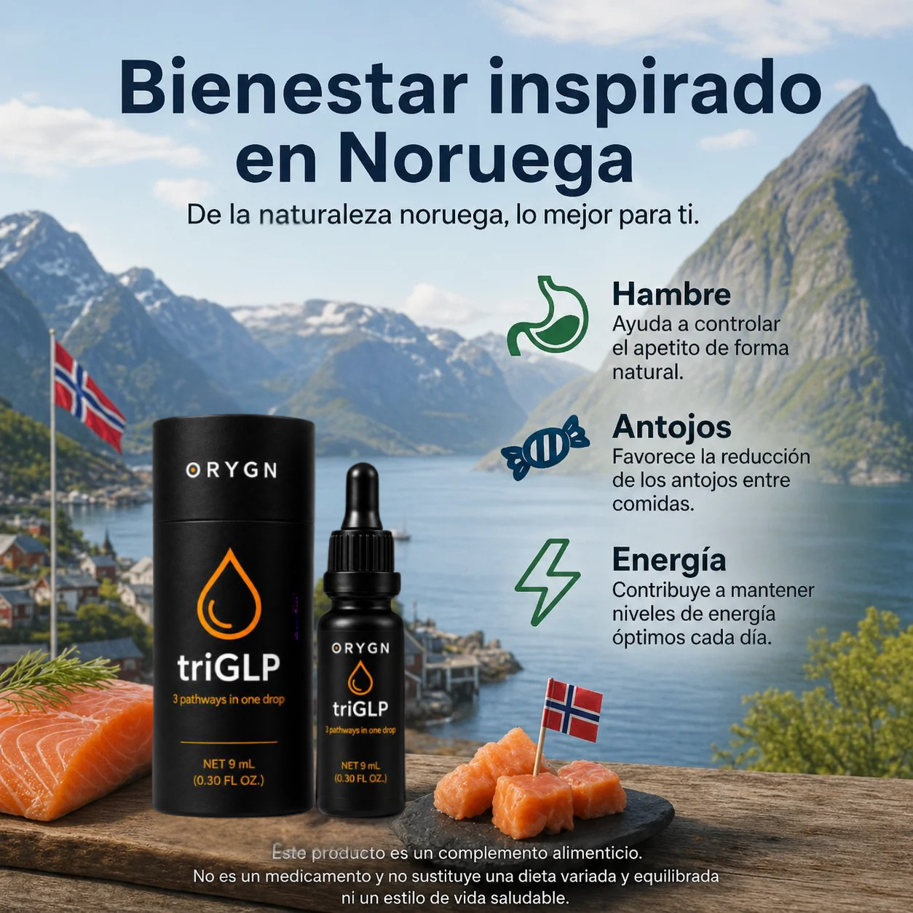

Nuestros socios procesan exclusivamente salmón salvaje noruego fresco mediante una hidrólisis enzimática suave y patentada, garantizando un grado de pureza apto para uso humano sin el empleo de químicos o solventes agresivos.
Procesado en pocas horas desde su captura en las frías aguas noruegas a menos de 4ºC, sin degradación lipídica o proteica.
Fragmentación patentada en oligopéptidos de bajo peso molecular (<3 kDa) para absorción sublingual directa.
>99% proteína pura, >15% colágeno tipo I (90% tipo I y >5% tipo III), sin antibióticos, sin GMOs ni aditivos.

Estudios de Salud Intestinal & HMOX1
Captación de Glucosa & DPP-IV
Bioensayos Receptores GLP-1/GLP-2/GIP
ORYGN comercializa ProGo® bajo la licencia concedida por Fission Holdings LLC (Tulsa, Oklahoma, EE. UU.), entidad que posee los derechos mundiales exclusivos para importar, comercializar y vender la materia prima bioactiva de salmón noruego de Hofseth BioCare en el canal de venta directa y MLM. Este acuerdo multimillonario fue ratificado oficialmente en el anuncio de la Bolsa de Oslo (Oslo Børs: HBC / Euronext) el 22 de mayo de 2026.
Ver Anuncio Oficial en Oslo Børs / Euronext →Ålesund, Noruega. Desarrollador biotecnológico original cotizado en la Bolsa de Oslo (Oslo Børs: HBC).
Palo Alto, California. Liderado por el Dr. Karl Sylvester MD en investigación de inmunomodulación e histología intestinal.
London, Ontario, Canadá. CRO clínica independiente encargada del ensayo de 128 días de vitalidad y estética.
EE. UU. Formulación clínica y presentación en la cumbre internacional A4M Longevity Fest en Las Vegas.
A diferencia de las intervenciones mono-receptoras, triGLP estimula las tres vías metabólicas principales de forma simultánea, optimizando la quema de grasa y el bienestar digestivo.
A 1 mg/ml, triGLP duplicó la actividad del receptor GLP-1 (alcanzando 2.3 veces la tasa basal a 10 mg/ml), reduciendo activamente los antojos y el apego calórico.
Demostró un incremento de 1.3 veces a 1 mg/ml y 2.6 veces a 10 mg/ml en la señalización del receptor GLP-2 en bioensayos fluorescentes de biosensor (Innoprot).
La actividad del receptor GIP aumentó 1.5 veces con 0.1 y 1 mg/ml, elevándose hasta 3.8 veces a la dosis de 10 mg/ml, impulsando el gasto energético celular.
Los estudios genómicos han revelado que los tri-péptidos bioactivos de triGLP reprograman positivamente vías genéticas esenciales para la salud celular y la longevidad.
Codifica la Ferritina de cadena pesada. Mejora drásticamente la absorción de hierro alimentario y el transporte de oxígeno en glóbulos rojos sin malestar digestivo.
Codifica la Hemooxigenasa-1. Activa una vía antioxidante y citoprotectora que desinflama la mucosa gastrointestinal y protege la barrera del colon.
Inhibición del gen de Araquidonato 12-lipoxigenasa. Estimula la quema acelerada de grasa e incrementa la sensibilidad a la insulina.
Mapa sintético del ecosistema de investigación de triGLP, desarrollado en colaboración con las principales instituciones internacionales de biotecnología.

Filtra y revisa en detalle cada uno de los estudios realizados en centros de investigación y publicados en revistas científicas de impacto.
Evaluación del impacto de los péptidos bioactivos triGLP frente a la proteína de suero (Whey) en métricas de masa corporal y salud metabólica durante 8 semanas.
Estudio aleatorizado controlado con placebo publicado que mide el impacto de la suplementación con hidrolizado proteico en la masa magra e índice metabólico.
Investigación que evalúa los mecanismos dependientes e independientes de la insulina en la absorción directa de glucosa muscular y efectividad glucorregulatoria.
Ensayos in vitro sobre la inhibición dosis-dependiente de Activina A y Miostatina, dos reguladores negativos clave del tono muscular esquelético.
Estudio de prueba de concepto que evalúa la modulación antiinflamatoria, salud de piel/cabello/uñas y niveles de fatiga diaria a dosis continuadas.
Investigación preclínica en Stanford demostrando cómo los péptidos solubles de salmón aminoran la inflamación gastrointestinal y previenen lesiones inducidas por TNBS.
Estudio clínico cruzado de cinética plasmática que compara la velocidad de absorción y elevación de leucina en sangre tras la ingesta de ProGo® frente al aislado de suero de leche (WPC-80).
Análisis genómico celular que mide el impacto de los péptidos bioactivos ProGo® sobre el perfil transcripcional de genes de respuesta al estrés oxidativo e inflamatorio.
Seguimiento continuo de la ciencia, los contratos internacionales y el impacto biotecnológico tras triGLP / ProGo®.
HBC concedió a Fission Holdings los derechos mundiales exclusivos para comercializar y vender ProGo® en el canal de venta directa y MLM, con compras mínimas proyectadas de más de $5 Millones anuales.
Whitepaper de HBC que confirma la bioactividad de triple vía GLP-1/GIP y la protección de la masa magra mediante la inhibición comprobada de miostatina y activina A.
Investigaciones independientes confirman cómo las fracciones peptídicas de bajo peso molecular desencadenan la respuesta de saciedad y glucorregulación.
Resultados del estudio de 128 días que evidencian potentes efectos antiinflamatorios y reducciones significativas en marcadores de estrés oxidativo celular.
Presentación científica ante la industria internacional del papel de los péptidos bioactivos marinos en la salud cardiometabólica y longevidad.
Cobertura de prensa especializada sobre el acuerdo de exclusividad de canal y distribución masiva internacional.
Desliza para ver la estimación de avances acumulados basados en los datos ponderados de nuestros ensayos clínicos.
ProGo® ha obtenido las máximas acreditaciones regulatorias de Norteamérica. No son declaraciones publicitarias, sino alegaciones evaluadas científicamente por la FDA y Health Canada con respaldo legal.
Estatus NDI concedido por la FDA de los Estados Unidos — la calificación de seguridad más elevada del mercado estadounidense, confirmando su total inocuidad para el consumo humano y su venta legal como suplemento.
Aprobación por el Non-GMO Project de EE. UU., permitiendo su distribución en redes internacionales de productos orgánicos y naturales como Garden of Life (propiedad de Nestlé).
Las Declaraciones Cualificadas de Salud (QHCs) de Health Canada son reconocidas y homologadas en Japón, Corea del Sur, China y la región de Asia-Pacífico.
| Organismo / Regulador | Metabolismo del Hierro | Eficiencia Metabólica & Inflamación | Salud Dérmica y Piel |
|---|---|---|---|
|
Health Canada Approved 4 Qualified Health Claims |
• Ayuda a mantener niveles saludables de ferritina y hemoglobina. • Apoya componentes sanguíneos de transporte de O₂. |
• Provee antioxidantes para mantener el buen estado de salud general. | • Ayuda a mantener la salud y firmeza en la piel. |
|
US FDA Structure & Function 13 Claims de Estructura/Función |
• Promueve niveles saludables de ferritina y hemoglobina. • Soporte de producción de glóbulos rojos y plaquetas. • Asiste en la absorción diaria de hierro dietético. |
• Actúa como potente antioxidante. • Soporte del sistema G.I. e inmunológico. • Respuesta saludable a la inflamación intestinal. • Promueve el uso de energía celular y reduce fatiga. |
• Ayuda a la piel seca y promueve la salud dérmica. • Soporte de la apariencia y reducción de arrugas. • Reduce la oxidación por radicales libres. |
★ Primer y único producto no ferroso en Canadá autorizado legalmente para alegar tratamiento en anemia ferropénica.
Más de $50M invertidos, una década de ensayos clínicos independientes y distribución autorizada en más de 80 países.
Procesado bajo las más estrictas especificaciones internacionales de inocuidad y pureza alimentaria.
Aprovecha la ciencia de triGLP y activa tus 3 vías metabólicas de forma natural. Envío internacional garantizado y 14% de descuento al ordenar el Pack Recomendado.

La evidencia clínica demuestra que triGLP reduce la grasa corporal en un 10% y respalda tu bienestar metabólico natural.